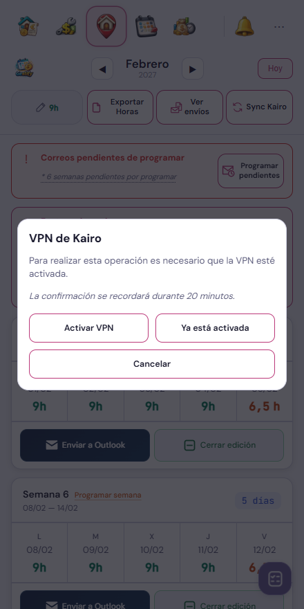
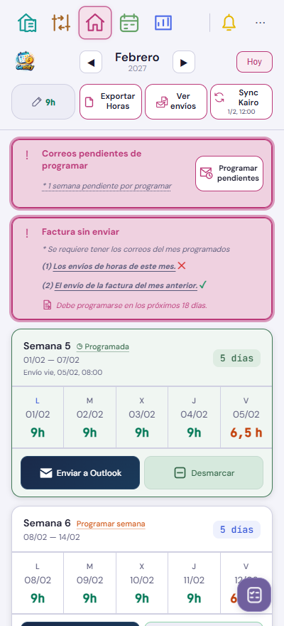

VPN y avisos · v548
La VPN se solicita sobre Home. La agenda se abre después de confirmar la conexión con Kairo, sin repetir la orden a MacroDroid. Se mantiene la confirmación de 20 minutos.


El parpadeo varía el fondo y el halo cada 1,6 segundos, sin mover el contenido. Conserva el rosa de Home y el rojo para revisión urgente; se desactiva si el sistema solicita reducir movimiento.
Ejemplos con datos ficticios. Solo se actualizan estas dos referencias; se conservan las demás capturas y revisiones. La agenda mantiene la interfaz de Kairo y ofrece reintentar si no llega a cargar.
Comprobaciones: conexión tardía, cancelación, caducidad de la confirmación, recuperación de la agenda, sincronización y recorrido manual. Ningún correo real enviado ni programado durante estas pruebas.